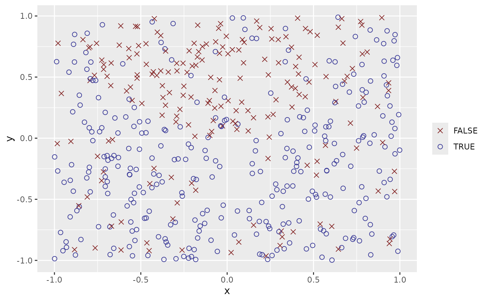
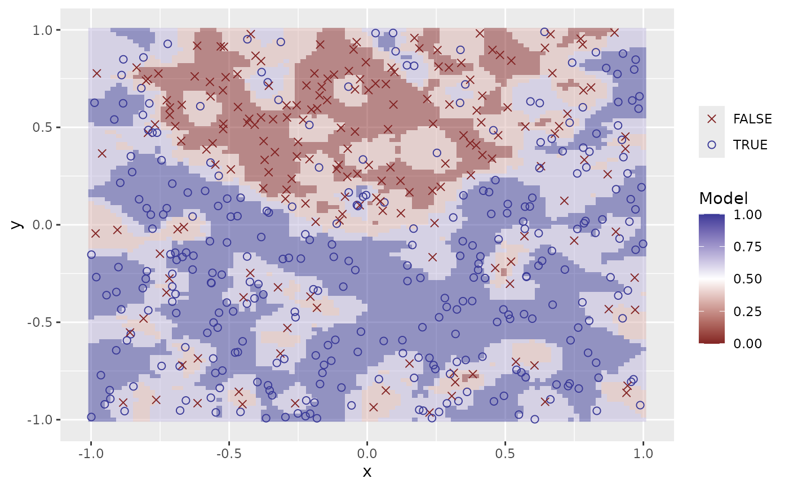
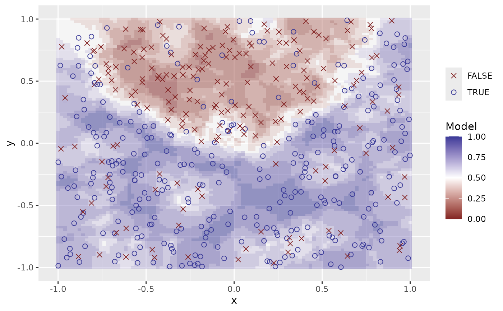
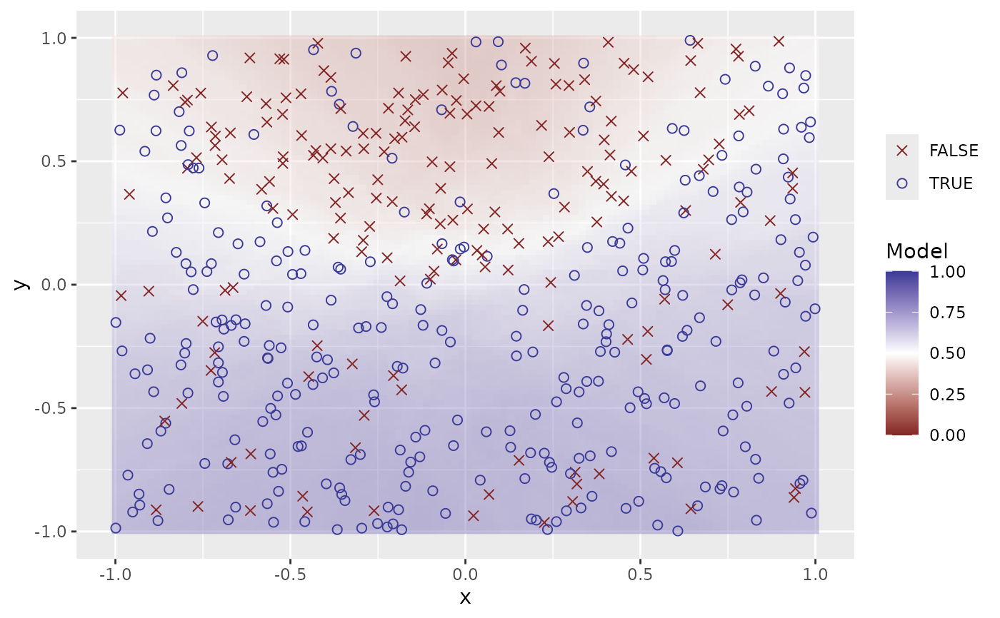
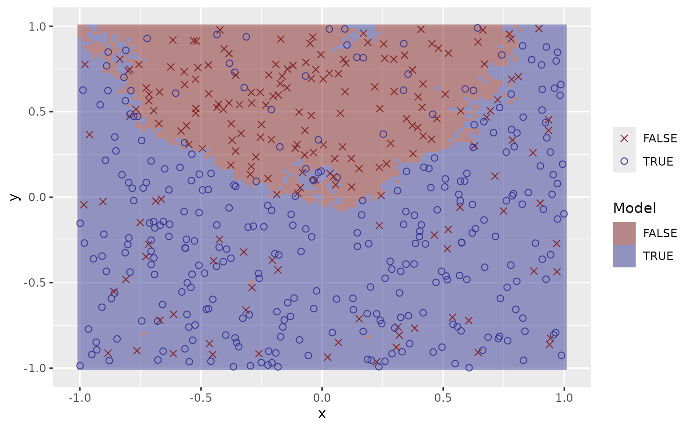
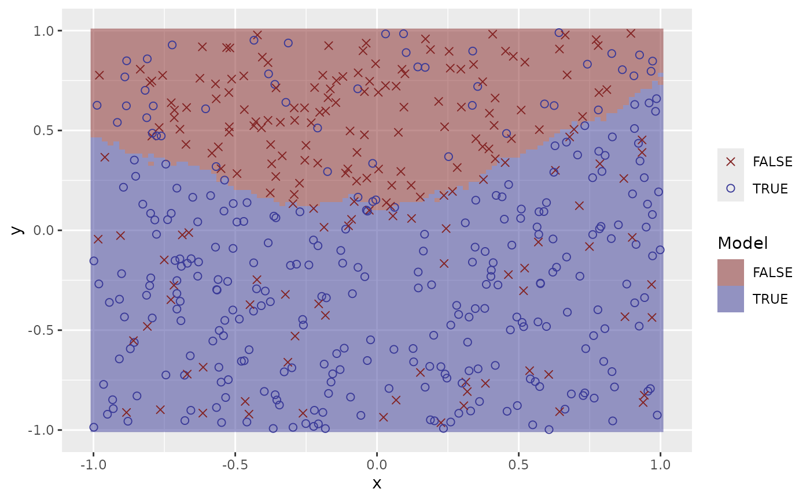

Fit K Nearest Neighbours to klassets_response_xy object
Examples
set.seed(123)
df <- sim_response_xy(relationship = function(x, y) x**2 > sin(y))
plot(df)

# defaults to prob
fit_knn(df)
#> # A tibble: 500 × 4
#> response x y prediction
#> <fct> <dbl> <dbl> <dbl>
#> 1 TRUE -0.425 -0.293 0.7
#> 2 TRUE 0.577 -0.267 0.7
#> 3 FALSE -0.182 -0.426 0.6
#> 4 TRUE 0.766 -0.840 0.8
#> 5 TRUE 0.881 -0.269 0.7
#> 6 TRUE -0.909 -0.644 0.8
#> 7 FALSE 0.0562 0.0721 0.5
#> 8 TRUE 0.785 0.00790 0.7
#> 9 TRUE 0.103 0.890 0.5
#> 10 TRUE -0.0868 -0.317 0.8
#> # ℹ 490 more rows
fit_knn(df, type = "response")
#> # A tibble: 500 × 4
#> response x y prediction
#> <fct> <dbl> <dbl> <fct>
#> 1 TRUE -0.425 -0.293 TRUE
#> 2 TRUE 0.577 -0.267 TRUE
#> 3 FALSE -0.182 -0.426 TRUE
#> 4 TRUE 0.766 -0.840 TRUE
#> 5 TRUE 0.881 -0.269 TRUE
#> 6 TRUE -0.909 -0.644 TRUE
#> 7 FALSE 0.0562 0.0721 FALSE
#> 8 TRUE 0.785 0.00790 TRUE
#> 9 TRUE 0.103 0.890 TRUE
#> 10 TRUE -0.0868 -0.317 TRUE
#> # ℹ 490 more rows
plot(fit_knn(df))
 plot(fit_knn(df, neighbours = 3))
plot(fit_knn(df, neighbours = 3))

plot(fit_knn(df, neighbours = 10))

plot(fit_knn(df, neighbours = 200))

plot(fit_knn(df, neighbours = 3, type = "response"))
plot(fit_knn(df, neighbours = 10, type = "response"))

plot(fit_knn(df, neighbours = 200, type = "response"))
